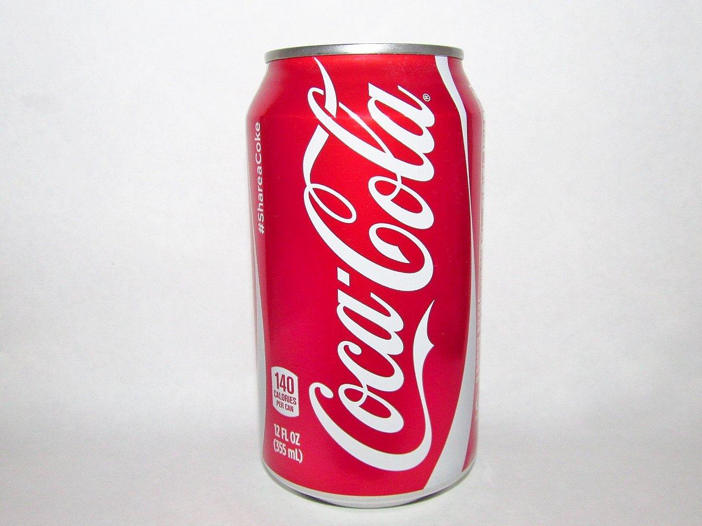
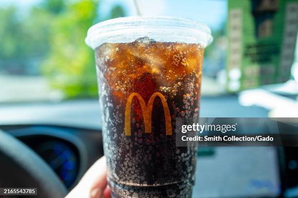
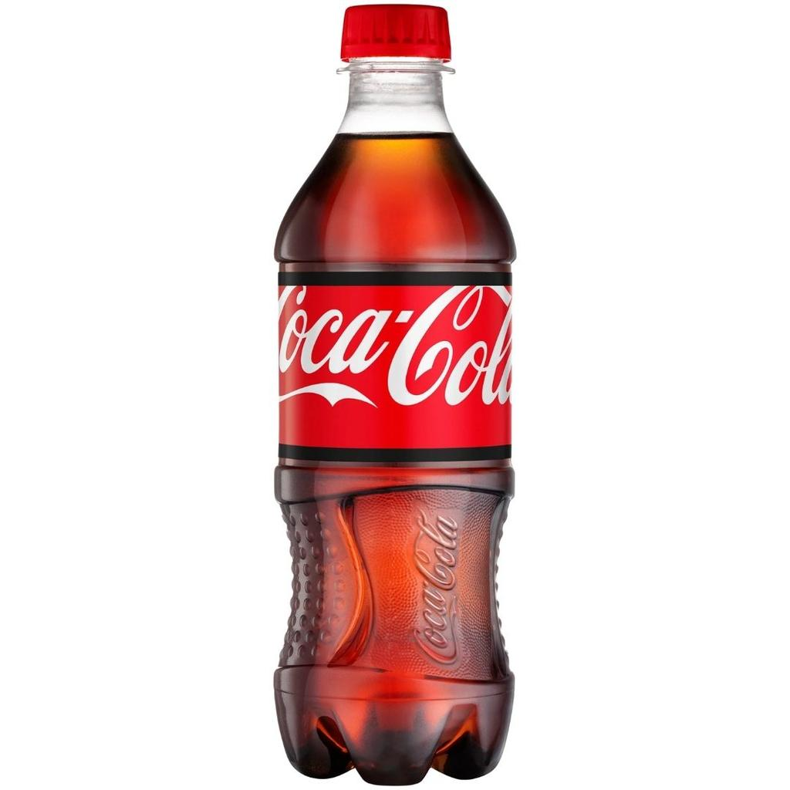
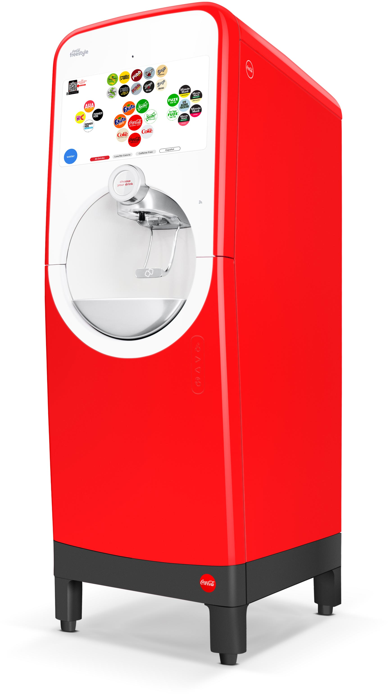
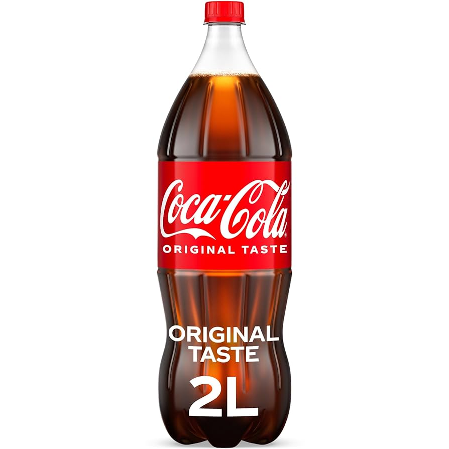
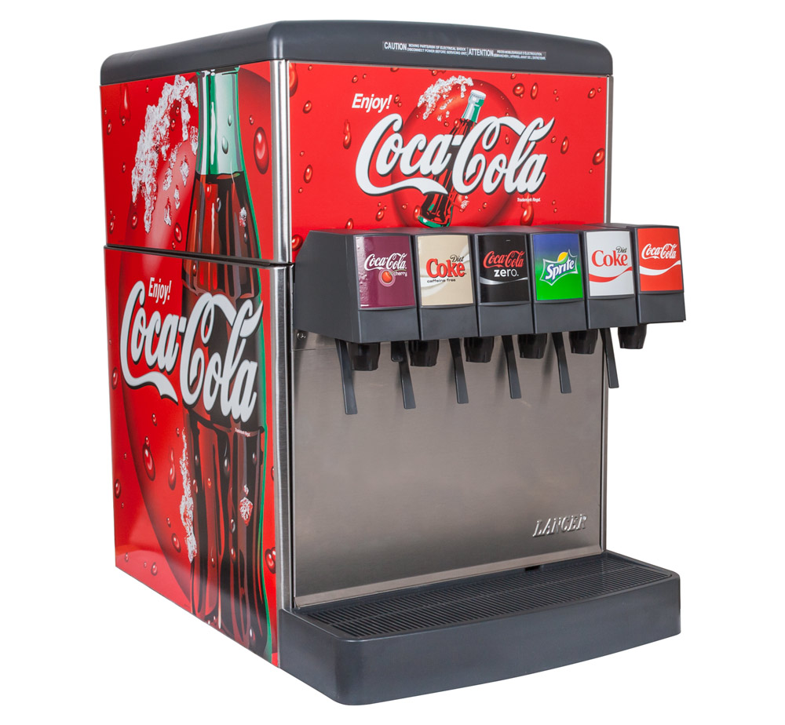

Forms of Coca-Cola Rated and Ranked
Form
Rank
Overall Score
Convenience
Mouth Feel
Thoughts
Can

The gold standard for Coca-Cola drinking. A cold can of Coke being cracked open anywhere within a mile radius would probably wake me from a very deep coma. The most consistent experience you can get. I love Coca-Cola my passion runs deep.
McDonald's

McDonald's has it's own rank because it is not the same as any other coke out there. It could be bottled as its own specific flavor. That being said, the flavor is good and I go out of my way to grab a medium McCoke sometimes. The best of the best when it comes to fountain coke. It's just not as consistent or convenient as the can.
Individual Bottle

Not as sharp and crisp as the can, However it has the added benefit of being able to actually save some for later without worrying about it being flat thanks to the lid.
Coke Freestyle Fountain

A coke freestyle machine is a sign of a prosperous society. The virtually infinite options is always daunting however. I do appreciate the freedom, but freedom comes at the cost of flavor consistency. The coke flavor is just not all the way there. Also these are hard to come by in my experience.
Two-Liter

A 2-liter is always just good. There isn't much to say with this. It has a more rounded taste compared to the can if that makes sense. It also goes flat instantly for some reason. But not a bad coke overall.
Wendy's

I am always dissapointed in the Wendy's soda department. Whatever corn syrups or soda stuff they use is not the actual brand. It isn't horrible, but there is much to be desired. It ranks above 7 because their food low-key makes up for it.
Any Other Fountain

Every other place is tied in a perpetual mid-off with each other. They don't give me Coca-Cola, they give me just cola. I usually stick to Dr. Pepper everywhere else.